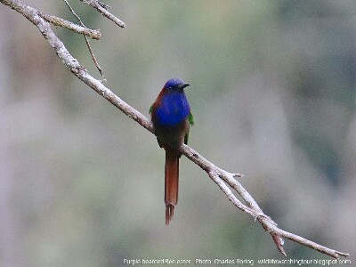

by Charles Roring - WA:+6281332245180
Duration: 17 days - all inclusive tour
Introduction
Sulawesi island of Indonesia is located in transitional zone between the continents of Asia and Australia. The high endemism of avifauna in this region (more than 90 endemic birds) attracts the attention of birdwatchers from all over the world to see unique tropical birds that are living along the boundary of Wallace line that separates Sulawesi and Borneo. During the tour, visitors will have the chance to see other animals as well such as monkeys, flying lizards, and colorful butterflies.


ITINERARY
Day 1 Arriving in Makassar city
Makassar as the capital of South Sulawesi should be considered as the entry or starting point for visitors who want to take a birding tour in this province. Tour participants should arrange their flights to this city. In Indonesia there are daily flights from major cities such as Jakarta, Denpasar and Surabaya to Makassar. One night rest in a hotel in Makassar is highly recommended after a long flight from home.

Birds that are usually common flying in the air or sitting on branches of trees in the city include Sooty-headed Bulbul, Glossy Swiftlet, and Eurasian Treesparrow.
Day 2 - 3 Birdwatching in Malino highland
The tour can be started from Malino - a highland town around 4 hour ride from Makassar. On the way, there are rice fields where visitors can stop for awhile to watch Cattle Egret, Javan Pond Heron, Pied Stilt, and Purple Heron. After that, the trip can be continued. Arriving in Malino, visitors can take a rest in the hotel for around 1 or 2 hours before starting to explore the forest around the hotel or up the slope to Biroro village to find Mountain Tailorbird, Sulawesi Myzomela, Olive-backed Sunbird, Pied Bushchat, Golden-mantled Raquet-tail, Lompobattang Leafwarbler, Grey-sided Flowerpecker, Crimson-crowned Flowerpecker, Citrine Canary Flycatcher, Turquoise Warbling Flycatcher, Common Kingfisher, and Spotted Harrier, and the famous but rare bird - the Lompobattang Flycatcher.
Because Malino is located in highland region whose climate is suitable for flowers, and agricultural plants, it is also a good site for seeing flowers and crop plants.
Day 4 Birding in Ramang-Ramang
For birdwatchers and photographers, this beautiful place is highly recommended. We will stop at the bank of a river and continue our trip by boat to the starting point of our tour. The steep karsts that are surrounded by ricefields and wooden houses of villagers provide a magnificent view of the landscape of South Sulawesi. Villagers work as farmers. They raise cattle and sell the meat in the city. As we walk through the karsts, we will look for Yellow-billed Malkoha (Cuculus crassirostris), Black-ringed White-Eye, White-faced Cuckoo Dove, Black Sunbird, Rainbow Bee-eater, Black-winged Kite, Lemon-bellied White-eye, Sulawesi Babbler, Blue-tailed Bee Eater, Sulawesi Honey Buzzard, Piping Crow, and Sulawesi Serpent Eagle.
Day 5 Karaenta - Palu City and Napu Valley
We will check out of the hotel early in the morning. Our destination will be Karaenta forest. It is the natural habitat of Sulawesi Hornbill, Knobbed Hornbill (Rhyticeros cassidix), White-necked Myna, Red-backed Thrush and Black-headed Kingfisher, Piping Crow. Other animals such as Sulawesi Flying Lizard, Moor Macaque Monkeys can also be seen there. After the early morning birding walk, we will continue our trip to airport and fly to Palu city. Arriving in Palu, we shall continue our trip by car to Napu valley where Wuasa village is located passing through Palolo valley, Lore Lindu National Park and Sedoa Slope. If there is time we may stop for one or two minutes to take pictures of birds that sit on electrical lines or in rice fields.

Day 6 Birding in Lake Tambing and along roadside of Lore Lindu
Early in the morning, at 05:00, we will leave the inn where we stay for Lake Tambing. We will do birdwatching there to watch various species of birds including Citrine Canary Flycatcher, Turquoise Flycatcher, Little-pied Flycatcher, Maroon-backed Whistler, Grey-sided Flowerpecker, Green Imperial Pigeon, Flame-browed Myna, Meyer's Lorikeet, Sulawesi Spangled Drongo, Yellow-billed Malkoha (now called Sulawesi Malkoha), Black-billed Koel, Mountain Leaftoiler, Grey-rumped Treeswift, Geomalia, Sulawesi Myzomela, Sulawesi Hanging Parrot, Sulawesi Pygmy-woodpecker, Great Shortwing, Geomalia, and etc.
There is a small flower garden at the bank of Lake Tambing which tourists can visit to see orchid, dahlia and other flowers of Central Sulawesi.
In the afternoon, birding walk down the Sedoa slope will allow us to find Red-eared Fruit Dove, Sulawesi Thrush, Maroon-backed Whistler and etc. Sometimes, if we are lucky, we will see Purple-bearded Bee-eater sitting on the branch of a tree, Sulawesi Hawk Eagle soaring in the sky and some Knobbed Hornbill flying in the sky from one mountain ridge to the other.
Day 7 Hiking and Birding in Anaso Track
This long slope of mountain ridge leads is to the top of Mount Rorekatimbu (2,505 meters above sea level). This trail is a great site for anyone who looks for Golden-mantled Racquet- tail which is now called Sulawesi Racquet-tail, Snowy-browed Flycatcher, Pygmy Cuckooshrike, Dark-eared Myza, Malia, Sulawesi Blue Flycatcher, Hylocitrea (Hylocitrea bonensis), Sulawesi Fantail, Sulawesi Leaf Warbler, Black-crowned White-eye, Ivory-backed Woodswallow, and etc.
After lunch and afternoon rest, a trip to Wanga rice field can be conducted to see birds during sunset time including Savanna Nightjar, Purple Heron, Purple Needletail, Little Egret, Intermediate Egret, Cattle Egret, Rufous Night Heron and etc.
Day 8 Return to Palu
We shall return to Palu city while doing several stops on the way to watch birds, butterflies and flowers as well as beautiful landscapes of rice fields, villages, and mountains of Central Sulawesi. Blue-tailed Bee-eater, Grosbeak Starling, Pale-headed Munia, Chestnut Munia, Cattle Egret, Purple Heron, Javan Pond Heron, Oriental Darter, Lesser Coucal, and Savanna Nightjar are some of the many birds that we can see during the last leg of our tour in Central Sulawesi. If there is still time for us to enjoy birding activity, a short trip to the coastal area of Palu city will allow us to look for Javan Plover, Little-ringed Plover, Wood Sandpiper, Cattle Egret, Pied Stilt, and Striated Heron.

Day 9 Flight to Manado
Early in the morning, we will leave our hotel for airport to continue our trip by airplane to Manado city, usually, via Makassar. Arriving in Sam Ratulangi airport of the Province of North Sulawesi, we shall continue by car to Kotamobagu town. Our main target will be the Minahasa-masked Owl. However, if the guests are too tired, we can try to watch it in the next evening.
Day 10 A Visit to Tambun's Maleo Sanctuary
We will go by car to Tambun nature reserve to watch Maleo bird in its sanctuary. The forest in the area is also the habitat of a lot of species of birds including Ivory-backed Woodswallow, White-necked Myna, Knobbed Hornbill, Red-bellied Pitta, Black-naped Oriole, White-eyed Spangled Drongo, Purple-winged Roller and a lot more. After that, we will return to the hotel and watch water birds in the rice field areas to look for Black-faced Munia, Isabelline Bush-Hen, and Barred Rail. In the evening, we can try to watch the Minahasa-masked Owl.

Day 11 Hiking Along Tapak Kolintang Forest
This is an important birding site Bolaang Mongondow regency. We can enjoy birding along the roadside to watch birds such as White-faced Cuckoo Dove, Grey-cheeked Green Pigeon, White-bellied Imperial Pigeon, Sulawesi Myna, Blue-backed Parrot, Green Imperial Pigeon, Slender-billed Crow, Minahasa Racquet-tail, Maroon-chinned Fruit Dove, and a lot more.

In the afternoon, after lunch, we will go to Tomohon in the highland region of Minahasa. This cool town has got flowers along the sides of its roads.
Day 12 Birding in Sonder
We will try to find Sulawesi-streaked Flycather at the slope of Tounelet, and continue birding along the road to Rambunan village which is famous for its traditional palm sugar industry. Pale-blue Monarch, Great Hanging Parrot, Barred Rail, Cattle Egret, Crimson-crowned Flowerpecker, Olive-backed Sunbird, Meyer's Lorikeet, Collared Kingfisher, Common Kingfisher, White-eyed Spangled Drongo, Black-faced Munia, White-browed Crake, as well as Sulawesi Honey Buzzard, and Sulawesi Hawk Eagle that like to soar in the sky looking for preys can be watched in this region.
In the evening, we can try to call Sulawesi Scops Owl in trees just a little outside the Sonder town. After that, we will return to Tomohon and take a rest there.
Day 13 Hiking to the top of Mount Mahawu - a visit to Extreme Market
This trip to the top of Mount Mahawu will enable us to see the magnificent view of Minahasa highland. Birds that become our target include Sulawesi Myzomela, Crimson Sunbird, Scaly Kingfisher, Sulawesi Bush-hen and etc.
Day 14 A visit to Lake Linow and Birding in Leilem transfer to Tangkoko
The trees and farmland behind Leilem village is a great place for watching such birds as Black-naped Oriole, White-bellied Imperial Pigeon, Sulawesi Malkoha, Grey-headed Imperial Pigeon, and Red-eared Fruit Dove, Superb Fruit Dove and Little Bronze Cuckoo.
During the day, we will go to Lake Linow to watch water birds including Glossy Swiftlet, Uniform Swiftlet, Sulawesi Swiftlet, Grey Teal, Collared Kingfisher, Sunda Teal, Collared Kingfisher, Sacred Kingfisher.
Day 15 Birding in Temboan - tour to Naun River
Early in the morning, we shall leave for Tangkoko. Arriving in the area, we will go birdwatching in Temboan. Watching birds from this open hill will allow us to see Blyth's Hornbill, Sulawesi Hornbill, Sulawesi Myna, Silver-tipped Imperial Pigeon, Grey-cheeked Green Pigeon, Purple-winged Roller, Minahasa Racquet-tail, Sulawesi Serpent Eagle and a lot more. After that we will check-in to the guesthouse outside of the entrance gate of Tangkoko Nature Reserve and take a rest. After lunch, at around 14:00, we will go by boat to Naun river to find Great-billed Kingfisher. A long the sea trip we will look for Pacific Reef Heron, Striated Heron, Great-billed Heron, Oriental Darter, Lesser-crested Tern, Glossy Ibis, and etc. The mangrove forest on both sides of Naun river are the habitat of Lemon-bellied White-eye, White-rumped Cuckooshrike, Sulawesi Crow and etc.
Day 16 Rainforest tour in Tangkoko Nature Reserve
This is a must visit destination for all visitors who are interested in birds and wildlife of Sulawesi. Tour participants will be able to see not only birds but also Celebes-crested Macaque monkeys, Bear Cuscus, Spectral tarsier, and etc.

Day 17 Transfer to airportEnd of Tour
The birdwatching tour in Sulawesi can be combined with tours in Halmahera island and West Papua province of Indonesia.
For cost of the tour, please, contact me (Charles Roring) by email to: peace4wp@gmail.com or by whatsapp to: +6281332245180